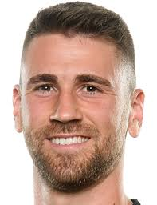
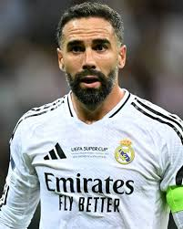
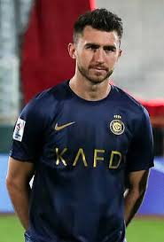
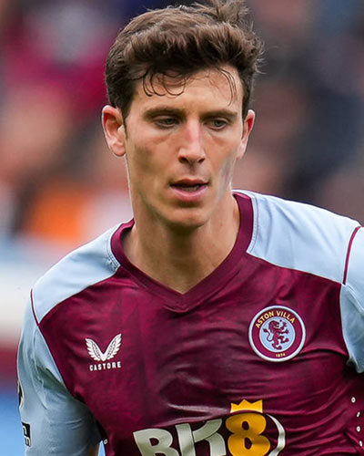
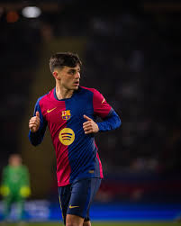
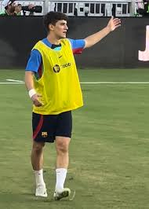
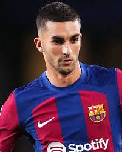
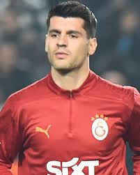

| Unai Simón |
Portero |
28 |
Unai Simón (n. 1997). Guardameta titular de la selección española, juega en el Athletic Club. |
 |
| Dani Carvajal |
Lateral derecho |
33 |
Dani Carvajal (n. 1992). Capitán del Real Madrid, pieza clave en la defensa de España. |
 |
| Aymeric Laporte |
Defensa central |
31 |
Aymeric Laporte (n. 1994). Central que milita en el Al Nassr, habitual en la selección española. |
 |
| Pau Torres |
Defensa central |
28 |
Pau Torres (n. 1997). Defensa central del Aston Villa, consolidado en la zaga española. |
 |
| Rodri Hernández |
Mediocampista defensivo |
29 |
Rodri (n. 1996). Mediocentro del Manchester City, considerado uno de los mejores del mundo. |
 |
| Pedri González |
Mediocampista |
22 |
Pedri (n. 2002). Joven talento del FC Barcelona, uno de los pilares creativos de la selección. |
 |
| Gavi Páez |
Mediocampista |
21 |
Gavi (n. 2004). Promesa del FC Barcelona, jugador con gran energía y proyección internacional. |
 |
| Lamine Yamal |
Extremo derecho |
18 |
Lamine Yamal (n. 2007). Joven prodigio del FC Barcelona, debutó con la selección a los 16 años. |
 |
| Ferran Torres |
Delantero |
25 |
Ferran Torres (n. 2000). Delantero del FC Barcelona, frecuente goleador con España. |
 |
| Álvaro Morata |
Delantero |
32 |
Álvaro Morata (n. 1992). Capitán de la selección, delantero del Atlético de Madrid. |
 |